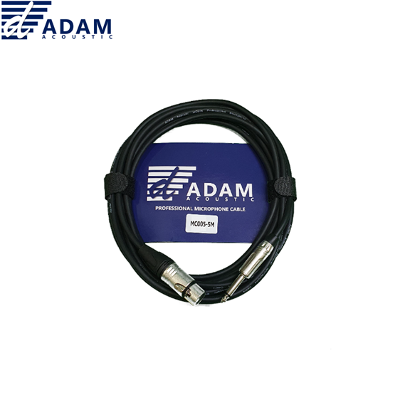

MC005는 CCAM(Copper Clad Aluminum Magnesium) 도체를 사용한 마이크/오디오 케이블입니다. XLR Female → 55TS(6.35mm) Male 구성으로, 믹서·오디오 인터페이스의 XLR 출력을 앰프·이펙터 등 6.35mm 입력 장비에 연결할 때 사용됩니다. 1코어 언밸런스드 신호선(20심×0.12mm)과 30심 접지 실드로 구성되어 있습니다.

CCAM 도체 변환 케이블. XLR Female → 55TS(6.35mm) Male 연결.
| 길이 | 소비자가 (VAT 포함) | 비고 |
|---|---|---|
| 3M | 8,800원 | 재고 없음 |
| 5M | 11,000원 | |
| 7M | 15,400원 | |
| 10M | 20,900원 |
ADAM MC005는 XLR Female 커넥터와 55TS(6.35mm) Male 커넥터를 양 끝에 장착한 변환 케이블입니다. 믹서·프리앰프·오디오 인터페이스 등 XLR 출력 장비와, 파워앰프·이펙터·키보드 등 6.35mm(55TS) 입력 장비를 직접 연결할 수 있습니다.
CCAM(Copper Clad Aluminum Magnesium) 도체를 사용하여 경제적이면서도 안정적인 신호 전송이 가능하며, 0.12mm 두께 와이어 20심 × 1코어 신호선과 0.12mm 두께 와이어 30심 접지 실드로 구성되어 있습니다.
MC005 변환 케이블의 핵심 포인트입니다.
MC005의 상세 기술 사양입니다.
| 모델명 | MC005 |
|---|---|
| 케이블 타입 | 마이크/오디오 케이블 (CCAM) |
| 커넥터 | XLR Female → 55TS(6.35mm) Male |
| 도체 | CCAM (Copper Clad Aluminum Magnesium) |
| 신호선 | 0.12mm × 20심 × 1코어 |
| 접지 실드 | 0.12mm × 30심 |
| 외경 (O.D.) | 6mm |
| 연결 방식 | Unbalanced |
| 판매 길이 | 5M / 7M / 10M |
MC005 변환 케이블의 대표적인 활용 분야입니다.
오디오 케이블의 신호 전송 방식에는 밸런스드(Balanced)와 언밸런스드(Unbalanced) 두 가지가 있습니다. MC005는 언밸런스드(Unbalanced) 케이블입니다.